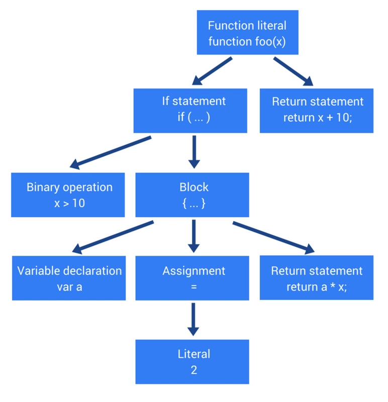
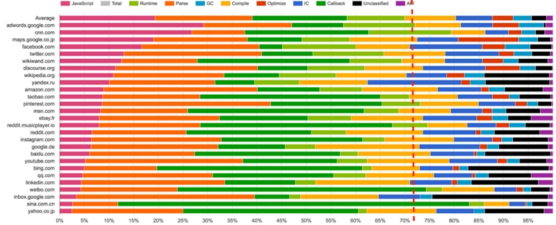
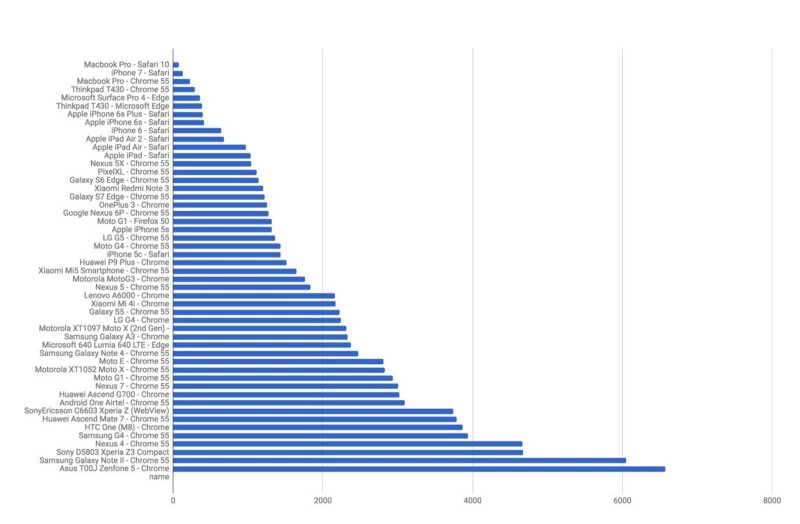
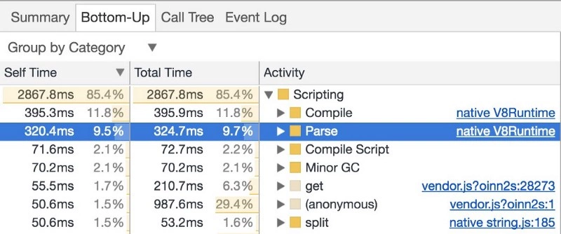
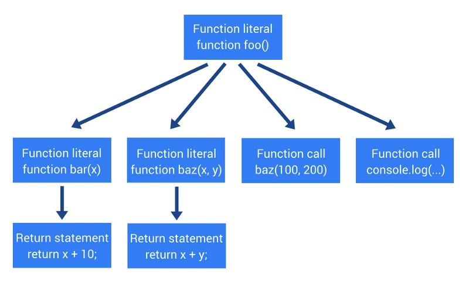
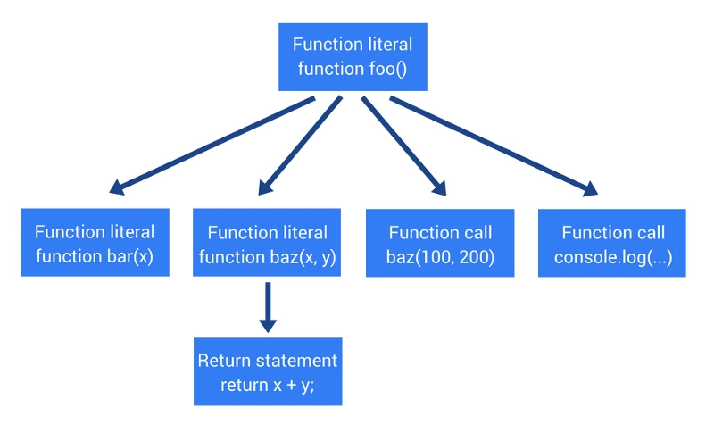

解析、抽象语法树（AST）+ 提升编译速度 5 个技巧
前言
本人平时学习及收集内容，欢迎参入一起讨论。
内容
一、概述
我们都知道运行一大段 javascript 代码性能会变得很糟糕。这段代码不仅需要通过网络传输，而且还需要解析、编译成字节码，最后执行。在之前的文章中我们讨论了 JS 引擎、运行时和调用堆栈等，以及主要由谷歌 Chrome 和 NodeJS 使用的 V8 引擎。它们在整个 JavaScript 执行过程中都发挥着至关重要的作用。这篇说的抽象语法树同样重要在这我们将了解大多数 JavaScript 引擎如何将文本解析为对机器有意义的内容，转换之后发生的事情以及做为 Web 开发者如何利用这一知识。
二、编程语言原理
那么，首先让我们回顾一下编程语言原理。不管你使用什么编程语言，你需要一些软件来处理源代码以便让计算机能够理解。该软件可以是解释器，也可以是编译器。无论你使用的是解释型语言（JavaScript、Python、Ruby）还是编译型语言（c#、Java、Rust），都有一个共同的部分将源代码作为纯文本解析为抽象语法树(abstract syntax tree，AST)的数据结构。
AST 不仅以结构化的方式显示源代码，而且在语义分析中扮演着重要角色。在语义分析中，编译器验证程序和语言元素的语法使用是否正确。之后，使用 AST 来生成实际的字节码或者机器码。
抽象语法树（abstract syntax tree 或者缩写为 AST），或者语法(syntax tree)，是源代码的抽象语法结构的树状表现形式，这里特指编程语言的源代码。和抽象语法树相对的是具体语法树(concrete synctaxtree)，通常称作分析树(parse tree)。一般的，在源代码的翻译和编译过程中，语法分析器创建出分析树。一旦 AST 被创建出来，在后续的处理过程中，比如语义分析阶段，会添加一些信息。
三、AST 程序
AST 不仅仅是用于语言解释器和编译器，在计算机世界中，它们还有多种应用。使用它们最常见的方法之一是进行静态代码分析。静态分析器不执行输入的代码，但是他们仍然需要理解代码的结构。
例如，你可能想要实现一个工具，该工具可以找到公共代码结构，以便你可以重构它们以减少重复。你可能会通过使用字符串比较来实现这一点，但这个会相当简单且有局限性。
当然，如果你对实现这样的工具感兴趣，你不需要编写自己的解析器。有许多与 Ecmascript 规范完全兼容的开源项目。Esprima 和 Acorn 即是黄金搭档，还有许多工具可以帮助解析器生成输出，即 ASTs，ASTs 被广泛用于代码转换。
例如，你可能希望实现一个将 Python 代码转换为 JavaScript 的转换器，基本思想是使用 Python 转换器生成 AST，然后使用 AST 生成 JavaScript 代码。
你可能会觉得难以置信，事实是 ASTs 只是部分语言的不同表示法，在解析前，它被表示为遵循一些规则的文本，这些规则构成了一种语言。在解析之后，它被表示为一个树结构，其中包含与输入文本完全相同的信息。因此也可以进行反射解析然后回到文本。
四、JavaScript 解析
让我们看看 AST 是如何构建的。我们用一个简单的 JavaScript 函数作为例子:
function foo(x){
if(x>10){
var a = 2;
return a*x;
}
return x+10;
}
2
3
4
5
6
7
解析器会产生如下的 AST：

注意，为了观看方便，这里解析器将生成的结果的简化版本。实际的 AST 要复杂得多。然而，这里目的是为了运行源码之前的第一个步骤前。如果人想查看实际的 AST 是什么样子，可以访问 AST Explorer。它是一个在线工具，你以在其中输入一些 JavaScript 并输出对应的 AST。
你可能会，为什么需要知道 JavaScript 解析器工作原理，毕竟这是浏览器工作，你想法是部分正确。下图展示了 JavaScript 执行过程中不同阶段的耗时。仔细瞅瞅，你或许会发现一些有趣的东西。

发现没？通常情况下，浏览器解析 JavaScript 大约需占总执行时间的15%到20%。我没有具体统计过这些数值。这些是来自真实应用程序和以某种方式使用 JavaScript 的网站的统计数据。也许15%看起来不是很多，但相信我，这是很多。
一个典型的单页程序加载 0.4mb 左右的 JavaScript，浏览器需要大约370ms来解析它。也许你会又说，这也不是很多嘛，本身花费的时间并不多。但请记住，这只是将 JavaScript 代码解析为 AST 所需要的时间。这并不包括运行本身的时间，也不包括在页面加载，如 CSS 和 HTML 渲染过程的耗时。这些还只涉及桌面，移动浏览器的情况会更加复杂，在手机上花在解析上的时间通常是桌面浏览器的 2 到 5 倍。

上图显示了 1MB JavaScript 包在不同类的移动和桌面浏览器解析时间。
更重要的是，为了获得更多类原生的用户体验而把越来越多的业务逻辑堆积在前端，Web 应用程序正变得越来越复杂。你可以轻易地想到网络应用受到的性能影响。只需要打开浏览器开发工具，然后使用该工具来解析、编译和浏览器中发生的所有其他事情上所消耗的时间。

不幸的是，移动浏览器上没有开发者工具。不过不用担心，这并不意味着你对此无能为力。因为有DeviceTiming工具，它可以用来帮助检测受控环境中脚本的解析和运行时间。它通过插入代码来封装本地代码，这样每次从不同的设备访问页面时，就可以在本地测量解析和运行时间。
好事就是 JavaScript 引擎做了很多工作来避免冗余的工作，并得到了更好的优化，以下为主流浏览器使用的技术。
例如，V8 实现脚本流(script steaming)和代码缓存技术。脚本流即脚本一旦开始下载，async和deferred的脚本就会在单独的线程上解析。这意味着在下载脚本完成后几乎立即完成解析，这会提升 10%的页面加载速度。
每次访问页面时，JavaScript 代码通常编译为字节码。然而，一旦用户访问另一页面，该字节码就被丢弃。发生这种情况是因为编译后的代码很大程序上依赖编译过的代码，这样当用户返回同一页面时，诸如下载，解析和编译等所有步骤都会被跳过。这使得 Chrome 可以节省大约 40%的解析和编译时间。此外，这还可以节省移动设备的电量。
在 Opera 中，Carakan引擎可以重用另一个程序最近编译过的输出。没有要求代码必须来自相同的页面甚至同个域下。这种缓存技术实际非常高效，还可以完全跳过编译步骤。它依赖于典型的用户行为和浏览场景：每当用户在应用程序/网站中遵循某个用户的特定浏览习惯，都会加载相同的 JavaScript 代码。不过，Carakan 引擎早已被谷歌的 V8 所取代。
Opera 新的 JavaScript 引擎 “Carakan”，目前速度是其他已存在 JavaScript 引擎（基于 SunSpider）的 2.5 倍。其在转化为本地机器代码时专门针对正则表达式做了优化。
Firefox 使用的 SpiderMonkey 引擎不会缓存所有内容。它可以过渡到监视阶段，在这个阶段中，它计算执行给定脚本的次数。基于此计算，它推导出频繁使用而可以被优化的代码部分。
SpiderMonkey 是 Mozilla 项目的一部分，是一个用 C 语言实现的 JavaScript 脚本引擎，另外还有一个叫做 Rhino 的 Java 版本。
显然，有些人决定什么都不做。Safari 的首席开发人员 Maciej Stachowiak 表示，Safari 不会对编译后的字节码进行任何缓存。缓存技术他们是有考虑过的问题，但是他们还没有实现，因为生成代码的耗时小于总运行时间的 2%。
这些优化不会直接影响 JavaScript 源代码的解析，但是会尽可能完全避免。毕竟做总比没做好点？
我们可以做很多事情来改善应用程序的初始加载时间。最小化加载的 JavaScript 数量：代码越小、解析所需要时间就越少，运行时间也就越小。要做到这一点，我们只能在当前的路由上加载所需的代码，而不是加载一大陀的代码。例如，PRPL 模式即表示该种代码传输类型。或者，可以检查代码的依赖关系，看看是否有什么冗余的依赖导致代码库膨胀，然而，这些东西需要很大的篇幅来进行讨论。
本文的主要的目的讨论作为 Web 开发人员可以做些什么来帮助 JavaScript 解析器更快地完成它的工作。还有,现代 JavaScript 解析器使用 启发法(heuristics) 来决定是否立即运行指定的代码片段或者推迟在未来的某个时候运行。基于这些启发法，解析器将进行即时或懒解析。
启发法是针对模型求解方法而言的，是一种逐次逼近最优解的方法。这种方法对所求得的解进行反复判断实践修正直至满意为止。启发法的特点是模型简单，需要进行方案组合的个数少，因此便于找出最终答案。此方法虽不能保证得到最优解，但只要处理得当，可获得决策者满意的近似最优解。一般步骤包括:定义一个计算总费用的方法;报定判别准则;规定方案改选的途径;建立相应的模型;送代求解。
立即解析会运行需要立即编译的函数。它主要做三件事:构建 AST，构建作用域层级和查找所有语法错误。另一方面， 懒解析只运行未编译的函数。它不构建 AST，也不查找所有语法错误，它只构建作用域层级，与立即解析相比节省了大约一半的时间。
显然，这不是一个新概念。即使像 IE 9 这样的浏览器也支持这种类型的优化，尽管与现在的解析器的工作方式相比，这种优化方式还很初级。
来看一个例子，假设有以下代码片段:
function foo() {
function bar(x) {
return x + 10;
}
function baz(x, y) {
return x + y;
}
console.log(baz(100, 200));
}
foo()
2
3
4
5
6
7
8
9
10
11
12
13
就像前面的例子一样，代码被输入到语法分析器中，语法分析器进行语法分析并输出 AST，如下：
- 声明函数
foo - 调用函数
foo - 在
foo里声明函数bar接收参数x, 并返回x和 10 相加的结果 - 在
foo里声明函数baz接收参数x和y, 并返回x和y相加的结果 - 调用
baz函数传入 100 和 2。 - 调用
console.log参数为之前函数调用的返回值。

那么期间发生了什么？解析器看到bar函数的声明、baz函数的声明、bar函数的调用和console.log的调用。但是，解析器做了一些完全无关的额外工作即解析bar函数。为什么这无关紧要？因为函数bar从来没有被调用过（或者至少在那个时候没有）。这是一个简单的示例，看起来可能有些不同寻常，但在许多实际应用程序中，许多声明的函数从未被调用。
这里不解析bar函数，该函数声明了却没有调用它。只在需要的时候在函数运行前进行真正的解析。懒解析仍然需要找到函数的整个主体并为其声明，但权此而已。它不需要语法树，因为它还没有被处理。另外，它不会从堆中分配内存，而堆通常会占用相当多的系统资源，简而言之，跳过这些步骤会带来很大的性能改进。
所以之前的例子，解析器实际上会像如下这样解析：

注意，这里只确认bar函数声明，没有进入bar函数体。在这种情况下，函数体只是一个返回语句。但是，与大多数实际应用程序一样，它可以更大，包含多个返回语句、条件语句、循环、变量声明，甚至嵌套函数声明。这完全是在浪费时间和系统资源，因为这个函数永远不会被调用。
这是一个相当简单的概念，但实际上，它的实现是非常难的，不局限于以上示例。整个方法还可以适用于函数、循环、条件、对象等。基本上，所有需要解析的东西。
例如，下面是一个非常常见的 JavaScript 模式。
var myModule = (function() {
// 整个模块的逻辑
// 返回模块对象
})();
2
3
4
大多数现代 JavaScript 解析器都能识别这种模式，此模式表示代码需要立即解析。
那么为什么解析器不都使用懒解析呢? 如果懒解析某些代码，这些代码需要立即执行，这实际上会使代码运行速度变慢。需要运行一次懒解析之后进行另一个立即解析，这和立即解析相比，运行速度会慢 50%。
现在对解析器底层原理有了大致的了解，是时候考虑如何提高解析器的解析速度。可以用这种方式编写代码，以便在正确的时间解析函数。大多数解析器都能识别一种模式:使用括号封装函数。对于解析器来说，这几乎总是一个积极的信号，即函数需要立即执行。如果解析器看到一个左括号，紧接着是一个函数声明，它将立即解析这个函数。可以通过显式地声明立即执行的函数来帮助解析器加快解析速度。
假设有一个名为 foo 的函数。
function foo(x) {
return x * 10;
}
2
3
因为没有明显地标识表明需要立即运行该函数所以浏览器会进行懒解析。然而，我们确定这是不对的，那么可以运行两个步骤。
首先，将函数存储在一个变量中:
var foo = function foo(x) {
return x * 10;
};
2
3
注意，这里有使用函数的名称 foo,这不是必需的，但是建议这样做，因为在抛出异常的情况下，stacktrace 会保留实际函数名称，而不仅仅是<anonymous>。
以上事例解析器执行懒解析，可以用括号封装起来，让解析器进行立即解析：
var foo = (function foo(x) {
return x * 10;
});
2
3
现在，解析器看见 function 关键字前的左括号便会立即进行解析。
因为需要知道解析器在哪些情况下执行懒解析或者立即解析，所以很难手动管理。此外，还需要花时间考虑是否立即调用某个函数，肯定没人想这么做的。
最后，这种地让代码更难阅读和理解。可以使用 Optimize.js 可以帮我们做这类事情，该工具只是用来优化 JavaScript 源代码的初始加载时间，它们对代码进行静态分析，然后通过使用括号封装需要立即运行的函数以便浏览器立即解析并准备运行它们。
像往常一样编码，然后有一段代码看起来像这样的：
(function() {
console.log('Hello, World!');
})();
2
3
一切看起来都很好，如预期的那样工作，而且速度很快，因为在函数声明之前添加左括号。当然，在进入生产环境之前需要进行代码压缩，以下为压缩工具的输出：
!function(){console.log('Hello, World!')}();
好像没问题，代码像以前一样工作。但是好像少了什么，压缩工具删除包裹函数的括号，而是在函数前放置了一个感叹号，这意味着解析器将跳过此并将执行惰解析。
最重要的是，为了能够执行该函数，它将在懒解析之后立即进行立即解析。 这会使代码运行得更慢，幸运的是，可以利用 Optimize.js 来解决此类问题，传给 Optimize.js 压缩过的代码会输出如下代码：
!(function(){console.log('Hello, World!')})();
这还差不多，现在拥有两全其美方案：压缩代码且解析器正确地识别懒解析和立即解析的函数。
五、预编译
但为什么不能在服务器端完成所有这些工作呢？毕竟，最好这样做一次并将结果提供给客户端，而不强制各个客户端重复做该项事情。那么，目前正在讨论引擎是否应该提供一种执行预编译脚本的方法，这样就可以节省浏览器运行时间。
在本质上讲，该思路是拥有可以生成字节码的服务器端工具，这样只需要传输字节码并在客户端运行，之后会看到启动时间的一些主要差异。这可能听起来很诱人，但事情并非那么简单，还可能会产生相反的效果，因为它会更大，并且很可能需要签署代码并出于安全原因对其进行处理。例如，V8 团队正在努力解决重复解析问题，这样预编译有可能实际并没有多大的用处。
六、提升编译速度一些建议
- 检查依赖，减少不必要的依赖
- 分割代码为更小的块而不是一整陀的
- 尽可能推迟加载 JavaScript，按需要加载或者动态加载。
- 使用开发者工具和 DeviceTiming 来检测性能瓶颈
- 用像 Optimize.js 的工具来帮助解析器选择立即散板或者懒解析以加快解析速度
参考资料
- JavaScript 是如何工作的：解析、抽象语法树（AST）+ 提升编译速度 5 个技巧
- Javascript 抽象语法树上篇(基础篇)
- Javascript 抽象语法树下篇(实践篇)
- 手写一个四则运算表达式转换成 AST 的方法（上）
- 手写一个四则运算表达式转换成 AST 的方法（下）
- 【第 1471 期】AST 抽象语法树——最基础的 javascript 重点知识
- 前端工程师为什么要学习编译原理？
- 掌握了 AST，再也不怕被问 babel，vue 编译，Prettier 等原理
- 【第 1813 期】什么是抽象语法树
- 手把手教你写几个实用的 AST 插件
联系作者
平凡世界，贵在坚持。